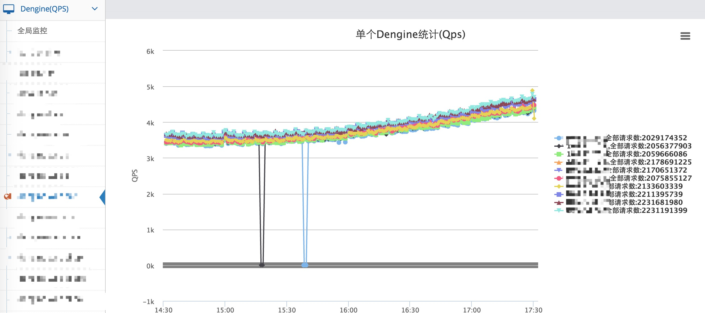

5.1 QPS监控
对Nginx服务器的请求状态进行监控。

如图所示，左侧栏列出所有的Nginx集群。点选一个Nginx集群，右侧会出现该集群所有Nginx服务器的QPS趋势图。点选最右侧的Nginx IP，可以显示或隐藏该Nginx服务器的QPS趋势。
QPS信息汇总使用了Tengine的请求状态统计模块：ngx_http_reqstat_module。该模块以域名为粒度，统计请求信息；并提供Http接口，提供请求状态。
暴露QPS信息可能影响网站安全。请禁止Camel管理端以外的IP访问该接口。设置方式如下：
编辑nginx/conf/nginx_status.conf配置文件，对/status路径进行如下的配置：
location /status {
check_status;
access_log off;
deny all;
allow ${camel_admin_ip};
}